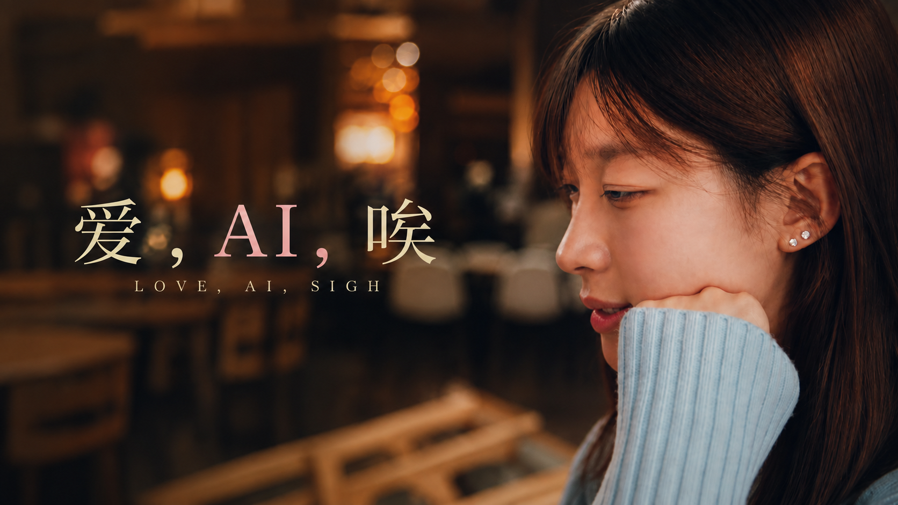
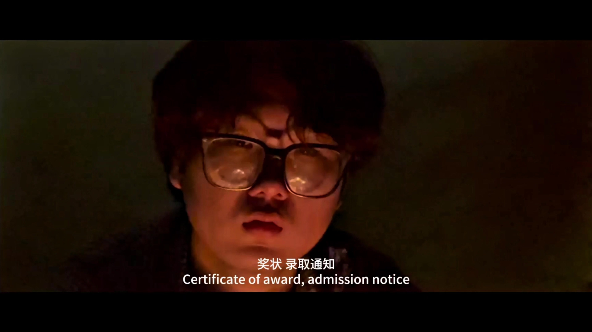
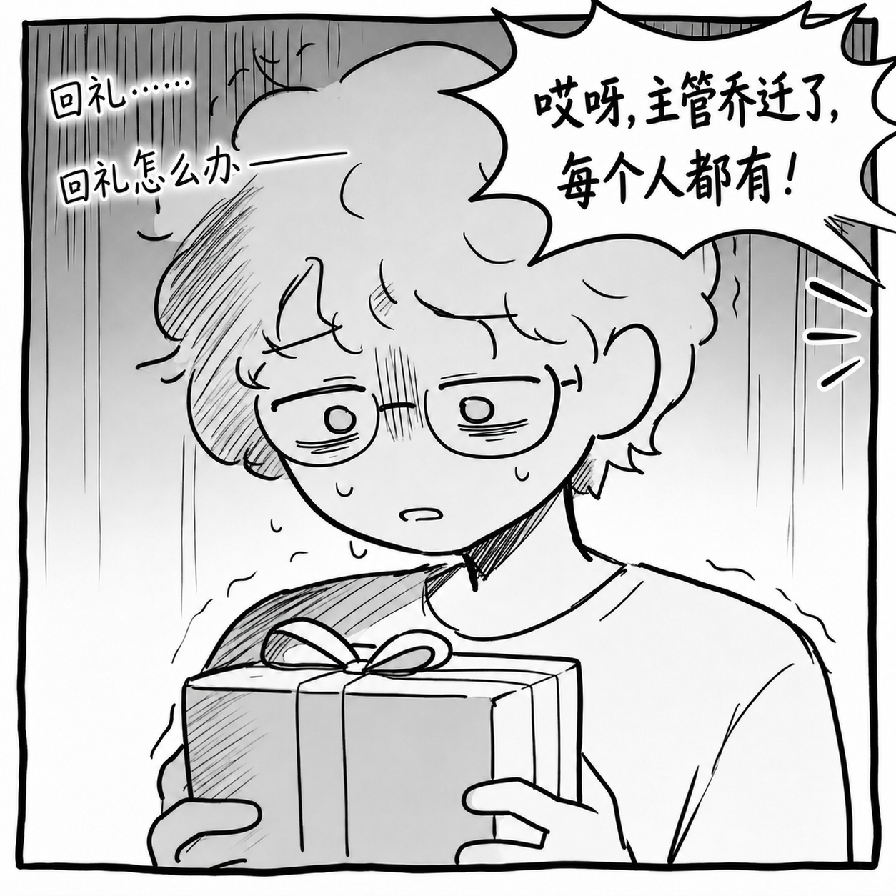
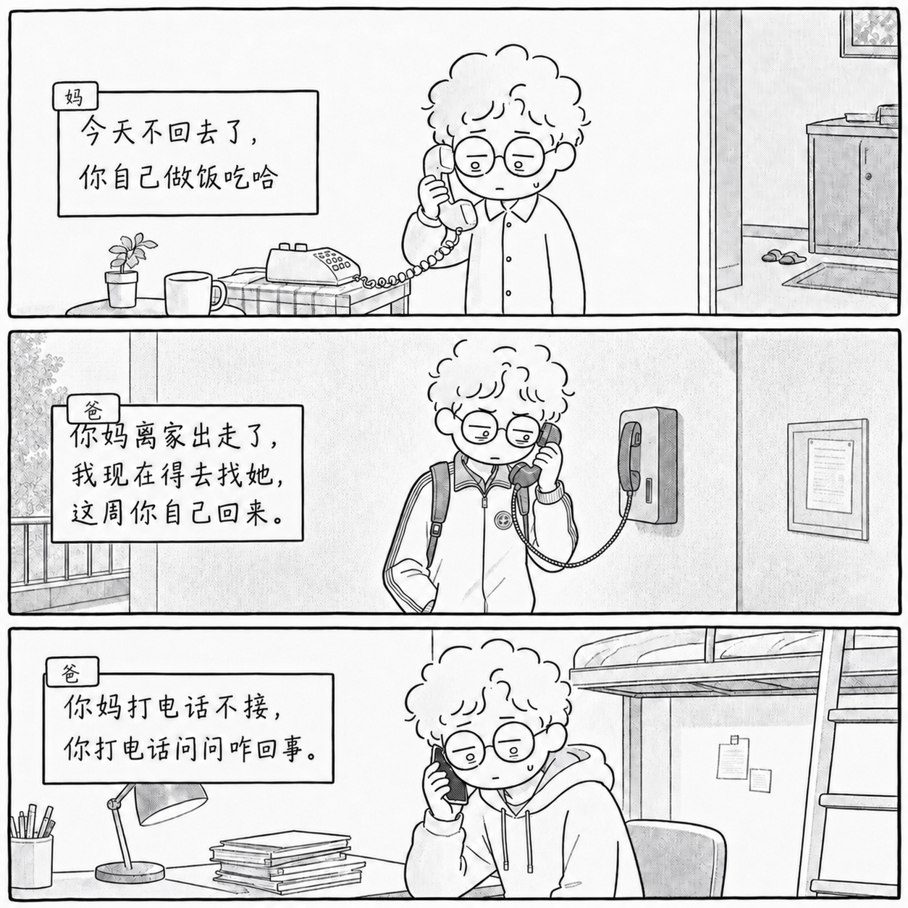
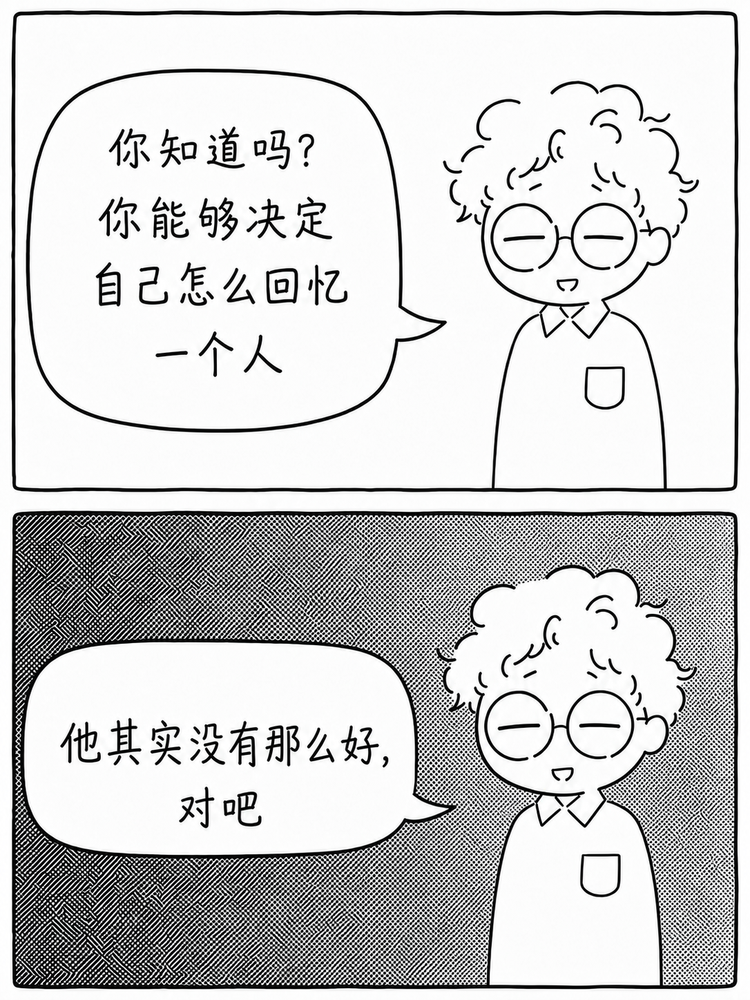
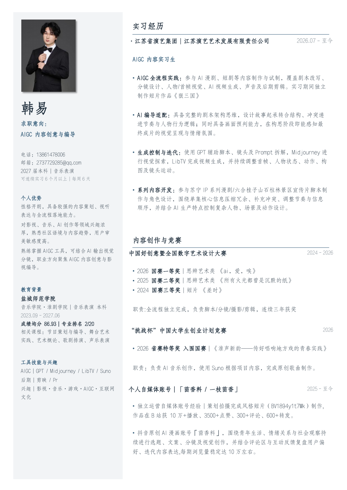

PROJECT 01THREE KINGDOMS / FEATURED CASE
以下仅展示可用于个人求职的局部画面与资产，不涉及片名、主创、平台及未公开剧情。
PORTFOLIO / 2026
从世界观和剧本出发，完成分镜、画面制作、实拍、剪辑与交付。四个案例记录了不同类型项目从想法到成片的过程。
以下仅展示可用于个人求职的局部画面与资产，不涉及片名、主创、平台及未公开剧情。

03
在校获奖作品 / Student Awarded Work
从校园生活中的情感关系出发，讨论 AI 陪伴、孤独感与真实关系之间的距离。由我独立完成从剧本到成片的全部制作。
以青年视角切入 AI 时代下的情感关系与心理状态，通过校园生活场景，探讨人与技术陪伴、孤独感以及真实关系之间的矛盾。
独立完成前期策划、剧本创作、分镜设计、导演、摄影及后期剪辑，实现从创意到成片的完整制作。
获得2026中国好创意暨全国数字艺术设计大赛
国赛一等奖。

04
国赛二等奖 · Short Film
从青年人的真实处境与成长困惑出发，以生活化场景推进人物选择，完成剧本、拍摄与后期制作。
以青年成长过程中的迷茫、选择与自我寻找为主题，从青年视角出发完成剧本创作与影像表达。
主导完成项目全流程制作，包括前期策划、剧本创作、拍摄执行与后期制作。
获得中国好创意暨全国数字艺术设计大赛
国赛二等奖。
结合音乐表演专业背景与 AI 音乐生成工具，完成文化内容主题音乐创作实验。
项目定位 结合音乐表演专业背景与 AI 音乐生成工具，完成文化内容主题音乐创作实验。
我的职责 在项目中负责音频创作部分，包括音乐风格设定、旋律方向设计、AI 辅助生成、版本筛选以及后期调整。
制作方式 结合音乐专业训练，使用 Suno、Logic 完成歌曲生成与后期处理，并进行人工筛选、结构调整和情绪优化，使音乐符合项目主题与画面需要。
03 / WORKFLOW
每一步都有明确产物，可审查、可修改、可交付。
主题、受众、人物关系、核心冲突与观看场景。
景别、动作、声音、转场与镜头节奏。
角色、场景、道具、风格锚点与版本控制。
镜头迭代、素材筛选、剪辑、配音与配乐。
连续性检查、画面质检、合规与文件归档。
持续运营的情感类 AI 漫画账号，通过图文形式完成观点表达与用户互动。
ACCOUNT POSITIONING / 账号定位



持续运营的情感类 AI 漫画账号，通过图文形式完成观点表达与用户互动。

06 / CONTACT — OPEN FOR OPPORTUNITIES & COLLABORATION